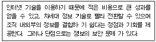
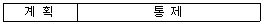

사무자동화산업기사 (2007-08-05 기출문제)
1과목: 사무자동화 시스템
1. 다음 중 사무자동화시스템을 평가하는 방법에 속하지 않는 것은?
- 투자 효율 산정법
- 상대적 평가법
- 정성적 평가법
- 전사적 비교법
(정답률: 55%)

2. 사무자동화 추진을 위한 하향식 접근 방식의 특징으로 맞는 것은?
- 최고 경영자에게 필요한 정보를 즉시 제공할 수 있어 실효성이 크다.
- 기업의 최하위 단위부터 자동화하여 그 효과를 점차 증대시키는 방식이다.
- 시행착오로 인한 전체적인 비용이 증가되는 경우가 발생할 수 있다.
- 요구되는 사무자동화 시스템을 구축하는 시간이 많이 소요된다.
(정답률: 61%)
3. 다음 중 사무자동화 정의에 적용되는 4 요소를 가장 옳게 나열한 것은?
- 기계화기술, 통신기술, 시스템과학, 경영관리기술
- 컴퓨터기술, 인간관리기술, 언어기술, 행동과학
- 컴퓨터기술, 통신기술, 시스템과학, 행동과학
- 경영관리기술, 자동화기술, 시스템과학, 인간공학
(정답률: 85%)
4. 다음 중 정보처리시스템에서 분산처리와 집중처리에 대한 설명으로 옳지 않은 것은?
- 시스템의 확장성은 분산처리 시스템이 우수하다.
- 사용자 중심의 시스템은 분산처리 시스템이 우수하다.
- 집중처리 시스템은 중앙 컴퓨터에 부하가 집중된다.
- 시스템의 유연성, 신뢰성은 집중처리 시스템이 우수하다.
(정답률: 62%)
5. 다음 중 데이터베이스 관리시스템의 기능을 원활하게 수행하기 위하여 관리 책임을 지는 사람은?
- 응용프로그래머
- 데이터베이스 관리자
- 시스템 프로그래머
- 단말기 사용자
(정답률: 96%)
6. 다음 중 사무자동화의 가장 큰 기대효과에 해당하는 것은?
- 정보처리기기의 대량보급
- 정보통신망의 보편화
- 산업인력의 고령화 및 고학력화
- 정보획득시간의 단축
(정답률: 58%)
7. 다음 중 연속적인 물리량만을 자료로 취급하는 컴퓨터는?
- 디지털컴퓨터
- 아날로그컴퓨터
- 하이브리드컴퓨터
- 마이크로컴퓨터
(정답률: 90%)
8. 어떤 디스크 팩이 7장으로 구성되어 있고 한 면당 200개의 트랙으로 구성되어 있을 때, 이 디스크 팩에서 사용 가능한 실린더의 수는?
- 200
- 400
- 1200
- 1400
(정답률: 55%)
9. 다음 중 레코드를 구성하는 단위는?
- 단어(Word)
- 바이트(Byte)
- 필드(Field)
- 파일(File)
(정답률: 67%)
10. 전자우편에 대한 설명 중 옳지 않은 것은?
- 문서 우편에 비해 복수의 수신자에게 배포가 용이하다.
- 전자우편은 컴퓨터 내에 파일화가 용이하지만 필요할 때 자유자재로 검색할 수은 없다.
- Paperless office 실현을 지향하는 기업활동과 밀접한 관계가 있다.
- 전자적인 수단을 이용하여 순간적인 전송이 가능하므로 즉시성의 효과를 얻을 수 있다.
(정답률: 67%)
11. 표준양식을 가지고 구조화된 데이터를 전송해서 수신측의 컴퓨터가 직접처리 가능하도록 하는 것은?
- FAX
- BcN
- EDI
(정답률: 80%)
12. 모니터 등의 디스플레이나 프린터의 해상도 단위이며 1인치당 몇 개의 도트(점)가 들어가는지를 말하는 것은?
- dpi
- bps
- bit
- lpm
(정답률: 78%)
13. 데이터의 가장 작은 논리적 단위로서 파일 구조상의 데이터 항목(Data Item) 또는 데이터 필드(Data Field)를 나타내는 용어는?
- 속성(Attribute)
- 엔티티(Entity)
- 관계(Relationship)
- 스키마(Schema)
(정답률: 70%)
14. TCP/IP(Transmission Control Protocol/Internet Protocol)상에서 네트워크 설정을 할 때 TCP/IP 등록 정보에 해당하지 않은 것은?
- 도메인 네임(Domain Name)
- IP Address
- 게이트웨이(Gateway)
- URL(Uniform Resource Locator)
(정답률: 55%)
15. 맨-머신 인터페이스에 대한 설명으로 옳지 않은 것은?
- 인간이 기계를 조작하거나 이용하는 부분으로 상호간의 의사전달이 이루어진다.
- 인간이 기계를 이용할 때 인간과 기계 사이의 연결 부분이다.
- LAN, 저장 및 처리 기술로 이루어진다.
- 입력, 출력 및 이들 기기의 이용 소프트웨어 등의 기술로 이루어진다.
(정답률: 84%)
16. CPU의 명령에 따라 독립적으로 입출력 장치와 기억 장치간의 데이터를 주고받을 수 있는 것은?
- 버퍼 메모리
- 캐시 메모리
- 채널
- 가상 메모리
(정답률: 51%)
17. 다음 중 CPU를 하드웨어 상으로 구분했을 때 이에 속하지 않는 것은?
- 레지스터부
- 제어부
- 연산부
- 외부 버스
(정답률: 66%)
18. 다음은 무엇에 대한 설명인가?

- 그룹웨어
- 인트라넷
- 워크플로우
- 미들웨어
(정답률: 51%)
19. 다음 중 사무자동화의 기본요소로 구성된 것은?
- 철학-인터넷-제도-사람
- 철학-장비-제도-사람
- 철학-장비-제도-로봇
- 종교-장비-제도-사람
(정답률: 95%)
20. 기업에서 많이 사용되고 있는 ERP는 다음 중 어떤 종류에 속하는가?
- 운영체제
- 데이터베이스 관리시스템
- 응용 시스템
- 통신전용 소프트웨어
(정답률: 70%)
2과목: 사무경영관리 개론
21. 사무소의 위치를 선정할 때의 기준과 거리가 먼 것은?
- 회사인 경우 거래처와의 연락이 편리한 곳
- 지사 혹은 지점이 있을 때 조직 전체에 대한 봉사를 최대한으로 할 수 있는 곳
- 근처에 생활환경이 편리한 주거시설이 있는 곳
- 유사한 업종이 한 곳에 집합하여 있지 않은 곳
(정답률: 63%)
22. 본 도표는 계획과 통제에 있어서 노력량의 함수관계를 형성하고 있다. 이에 관한 설명으로 맞지 않는 것은?(단, 도표에서 계획:통제 = 7:3 이라 가정한다.)

- 계획이 불충분한 때로서 통제는 힘들고 많은 노력이 든다.
- 계획이 잘 짜여진 것으로 통제의 정확도가 높고 노력이 경감된다.
- 통제의 성과면에서 효율도를 높일 수 있다.
- 계획이 잘 짜여진 것으로 통제상의 노력이 경감되고 완전성을 기할 수 있다.
(정답률: 75%)
23. 사무실 사무 환경의 배치에 관한 것으로 가장 적합한 것은?
- 광선은 우측 어깨로부터 받을 수 있도록 배치한다.
- 관리자, 감독자는 가능한 부하직원의 전면에 위치시키도록 한다.
- 방문객의 접촉 기회가 많은 부서는 입구와 거리가 먼 자리에 배치한다.
- 작업자가 빈번히 사용하는 사무용구나 비품은 가능한 한 집무자 곁에 배치한다.
(정답률: 81%)
24. 원 프로그램의 일련의 지시, 명령의 전부 또는 상당부분을 이용하여 새로운 프로그램을 창작하는 것은?
- 복제
- 배포
- 개작
- 공표
(정답률: 65%)
25. 다음 중 사무관리 기능을 가장 잘 설명한 것은?
- 사무는 기업의 활동을 능률적으로 달성하기 위한 관리활동으로써, 각 기능들이 개별적으로 활동하게 해준다.
- 사무는 조직의 모든 부문 활동을 활발하게 움직이게 하는 상호 결합 기능을 갖고 있다.
- 사무는 기업의 목표를 달성할 수 있도록 조언하고 지지하는 인적보조 기능으로서 경영 규모가 커질수록 관리기능은 더욱 축소도이다.
- 사무는 정보를 필요로 하는 자에게 신속한 의사 결정을 내릴 수 있도록 전달하는 개별적 서비스 기능이다.
(정답률: 52%)
26. 자료 관리의 자동화에 사용되는 기능 및 장치에 해당하지 않은 것은?
- 워드프로세서
- 전자우편
- Fax
- 원격회의
(정답률: 56%)
27. 사무기계화의 기본목표 중 주목표에 해당하는 것은?
- 사무의 품질 향상
- 사무의 원가 절감
- 사무의 편리성
- 사무의 생산성 향상
(정답률: 84%)
28. 자료 관리에 대한 설명으로 적합하지 않은 것은?
- 각종 공문서만을 효율적으로 보존하는 것이다.
- 필요한 자료를 계획적으로 수집, 분류하는 것이다.
- 자료를 필요로 하는 곳에 신속하게 전달하는 것이다.
- 자료의 대출, 전시, 복사, 번역 서비스 등을 행하는 것이다.
(정답률: 61%)
29. 사무실내의 소음을 줄이는 방법 중 적당하지 않은 것은?
- 소음발생원을 소음실로 격리시킨다.
- 이중 유리시설을 한다.
- 바닥은 탄력성이 없는 재료를 사용한다.
- 사무실 배치를 합리적으로 하여 불필요한 보행을 줄인다.
(정답률: 88%)
30. VDT 증후군은 주로 어느 사무환경에 의하여 발생되는가?
- 소음발생
- 공기조절 불량
- 배선고장
- 영상표시장치
(정답률: 84%)
31. 전통적 관리와 목표에 의한 관리에는 몇 가지 차이점이 있다. 다음 중 목표에 의한 관리에 해당하는 것은?
- 목표설정이 귀납적임
- 상급자에 의해 통제됨
- 분업화, 전문화 촉진됨
- 높은 수준의 욕구충족이 가능함
(정답률: 45%)
32. 사무적업의 효율화를 기하기 위해서는 절차, 서식, 작업 시간을 단축하거나 간소화해야 하는데, 다음 사항 중 사무 간소화에 해당하지 않은 것은?
- 본질적이 아닌 작업을 제거한다.
- 사무작업에서 불필요한 단계나 복잡성을 제거한다.
- 사무작업의 속도를 높여 업무량을 증가시키다.
- 사무작업의 중복성을 최소화 시킨다.
(정답률: 67%)
33. 자료로서 가치성을 검토할 경우 적용하는 기준 항목에 가장 적합하지 않은 것은?
- 유용성
- 신뢰성
- 효과성
- 부분적인 이용성
(정답률: 84%)
34. 다음 중 일반 사무실에서 눈이나 신경의 피로를 덜기 위한 가장 적정한 조도(Lux) 기준은?
- 500
- 1000
- 1500
- 2000
(정답률: 63%)
35. 문서관리의 기본원칙과 거리가 먼 것은?
- 능률화와 절감화
- 표준화와 간소화
- 신속화와 정확화
- 전문화와 인쇄화
(정답률: 83%)
36. 사무관리에 대한 설명으로 가장 옳은 것은?
- 사무실의 위치와 기기 설비 등을 효율적으로 관리하는 것을 말한다.
- 인적자원의 효율적 관리를 위하여 통제 중심의 기능을 중요시 한다.
- 조직의 운용에 필요한 유용한 정보를 효율적으로 관리하는 것을 말한다.
- 전통적 사무 관리는 컴퓨터 및 사무자동화 기기 중심의 관리에 중점을 둔다.
(정답률: 54%)
37. EDI의 발생 배경이 아닌 것은?
- 전산관련 업무를 맡은 유능한 인재들의 활용
- 정보통신 기술의 발전과 첨단 정보처리에 대한 요구 증대
- 업무처리의 신속성과 대량의 정보처리에 대한 요구 증대
- 수작업 비용의 증가
(정답률: 70%)
38. 계획화(Planning)의 내용과 거리가 먼 것은?
- 목표 또는 목적의 설정
- 자금의 조달과 원천의 결정
- 실시 가능한 대체안 중 최선안 선택
- 업무처리 결과에 대한 분석
(정답률: 70%)
39. 경영정보시스템이란 “경영 의사 결정에 필요한 정보를 공급하기 위하여 다양한 공급원들로부터 자료를 통합할 수 있는 형식화된 컴퓨터 정보시스템이다.” 라고 할 수 있다. 다음 중 경영정보시스템의 특징으로 가장 거리가 먼 것은?
- 의사결정 지향
- 요약된 정보
- 일일 운영 지향
- 예측 및 통제 지향
(정답률: 49%)
40. 시스템 소프트웨어의 운영 체제가 아닌 것은?
- MS-Windows
- OS/2
- Compiler
- Unix
(정답률: 61%)
3과목: 프로그래밍 일반
41. 운영체제를 기능상 분류했을 경우 제어프로그램에 해당하지 않는 것은?
- 감시프로그램
- 작업제어프로그램
- 언어번역프로그램
- 데이터관리프로그램
(정답률: 78%)
42. C언어에서 사용되는 관계 연사자 중 “A와 B가 같지 않다.”의 의미를 갖는 것은?
- A => B
- A != B
- A <= B
- A & B
(정답률: 96%)
43. 객체지향 언어에서 객체(object)의 구성을 나타낸 것은?
- object = program +operator
- object = member function +data
- object = class + class
- object = class +member function
(정답률: 46%)
44. 교착상태 발생의 필요조건으로 옳지 않은 것은?
- 상호 배제 조건
- 점유 및 대기 조건
- 환형 대기 조건
- 선점 조건
(정답률: 81%)
45. 객체의 외부적인 활동을 연산이라는 전제하에서 구현한 것은?
- 속성
- 메시지
- 메소드
- 추상화
(정답률: 63%)
46. 대부분의 고급 프로그래밍 언어에서 제공하는 예약어에 관한 설명으로 거리가 먼 것은?
- 예약어의 사용은 프로그램의 판독성을 저해한다.
- 프로그램을 번역할 때 예약어의 사용은 심볼 테이블 검색 시간을 단축시킨다.
- 예약어의 사용은 오류가 발생하였을 때 오류회복(error recovery)을 가능케 한다.
- 프로그래머가 변수 이름이나 다른 목적으로 사용할 수 없는 핵심어(key word)이다.
(정답률: 58%)
47. 정적바인딩에 해당하지 않는 것은?
- 번역시간
- 링크시간
- 실행시간
- 언어구현시간
(정답률: 44%)
48. 구조적 프로그램의 기본 구조가 아닌 것은?
- 순차(sequence)구조
- 조건(condition)구조
- 일괄(batch)구조
- 반복(repetition)구조
(정답률: 78%)
49. BNF 심볼에서 정의를 나타내는 것은?
- ::=
- <>
- ㅣ
- -->
(정답률: 90%)
50. 프로그래밍언어에서 가장 보편적으로 사용되는 표기법은?
- suffix
- postfix
- prefix
- infix
(정답률: 85%)
51. C 언어의 데이터 형식에 해당하지 않는 것은?
- double
- long
- int
- character
(정답률: 69%)
52. 특정한 작업을 수행할 수 있도록 사용자가 개발한 프로그램을 일반적으로 무엇이라 하는가?
- System program
- operating system
- application program
- compiler
(정답률: 60%)
53. C 언어의 관계 연산자에 해당하지 않는 것은?
- <
- %
- ==
- !=
(정답률: 79%)
54. C 언어의 do ~ while 문에 대한 설명 중 틀린 것은?
- 문의 조건이 거짓인 동안 루프처리를 반복한다.
- 문의 조건이 처음부터 거짓일 때도 문을 최소 한번은 실행한다.
- 무조건 한 번은 실행하고 경우에 따라서는 여러 번 실행하는 처리에 사용하면 유용하다.
- 맨 마지막에 “;”이 필요하다.
(정답률: 72%)
55. 컴파일러와 인터프리터에 관한 설명으로 옳은 것은?
- 포트란, 코볼은 컴파일러 언어에 해당한다.
- 인터프리터는 원시프로그램을 번역하여 목적프로그램을 생성한다.
- 인터프리터는 반복적으로 실행하는 프로그램에서 실행 시간이 빠르다.
- 컴파일러는 원시프로그램을 번역하여 목적프로그램을 생성하지 않는다.
(정답률: 65%)
56. 프로그램에서 하나의 값을 저장할 수 있는 기억 장소의 이름을 의미하는 것은?
- 함수
- 변수
- 주석
- 라이브러리
(정답률: 51%)
57. 운영체제의 성능 평가 항목으로 거리가 먼 것은?
- 비용
- 처리 능력
- 반환 시간
- 사용 가능도
(정답률: 68%)
58. 주기억장치의 배치 전략 종류에 해당하지 않는 것은?
- First-Fit
- Last-Fit
- Best-Fit
- Worst-Fit
(정답률: 56%)
59. 수학적 수식 “A+B*C-D”을 후위(Postfix) 표기법으로 표현한 것은?
- A B C * D - +
- A B + C * D -
- A B C + * D -
- A B C * + D -
(정답률: 69%)
60. 선점형 스케줄링 방식에 해당하는 것은?
- FIFO
- SJF
- Round-Robin
- HRN
(정답률: 50%)
4과목: 정보통신 개론
61. 정보통신 시스템의 특징에 대한 설명 중 틀린 것은?
- 통신 회선을 효율적으로 이용 가능함
- 에러제어 방식을 사용하여 시스템의 신뢰도가 높음
- 협대역 전송에만 주로 사용함
- 고품질의 통신서비스를 제공함
(정답률: 63%)
62. 반송파의 위상과 진폭을 상호 변환하여 신호를 전송함으로써 4개의 위상과 2개의 진폭으로 한번에 3비트가 전송 가능한 방식은?
- ASK
- PSK
- FSK
- QAM
(정답률: 79%)
63. 다음 중 광섬유 케이블의 설명이 아닌 것은?
- 대역폭이 넓어 정보 전송 능력은 향상되나 동축 케이블보다 신호 감쇠현상이 심하다.
- 전기적 잡음 영향을 받지 않기 때문에 신뢰성이 높다.
- 광을 이용하여 전송하기 때문에 보안성이 뛰어나다.
- 동축 케이블에 비해 무게와 크기에서 이점을 갖는다.
(정답률: 63%)
64. 다음 중 통신 프로토콜에 대한 설명으로 옳은 것은?
- 시스템 간 정확하고 효율적인 정보전송을 위한 일련의 절차나 규범이다.
- 아날로그 신호를 디지털 신호로 변환하는 방법이다.
- 자체적으로 오류를 정정하는 오류제어방식이다.
- 통신회선 및 채널 등의 정보를 운반하는 매체를 모델화한 것이다.
(정답률: 61%)
65. 다음 중 HDLC 프레임의 구성에 포함되지 않는 것은?
- 주소 필드
- 제어 필드
- FCS 필드
- ARQ 필드
(정답률: 75%)
66. LAN의 액세스방식 중 이더넷(ETHERNET)에서 채택한 제어 방식은?
- 랜덤(RANDOM) 방식
- CSMA/CD 방식
- 토큰패싱(Token passing)방식
- 토큰링크(Token link) 방식
(정답률: 82%)
67. 정보통신시스템의 구성기기인 모뎀(MODEM)은 어느 장치에 해당하는가?
- 데이터단말장치
- 신호변환장치
- 통신회선장치
- 정보처리장치
(정답률: 73%)
68. 다음 중 CRC 방식과 관계없는 것은?
- HDLC에서 사용
- 전진에러제어
- 생성다항식을 사용
- 오류검출 기능
(정답률: 56%)
69. 다음 중 전진오류수정(FEC)에 이용되는 것은?
- 3-초과부호
- 그레이(Gray)부호
- 길쌈부호(CONVOLUTION CODE)
- BCD분호
(정답률: 48%)
70. 다음 중 펄스변조방식이 아닌 것은?
- PCM
- PM
- DM
- ADPCM
(정답률: 34%)
71. 다음 중 정보통신의 교환방식이 아닌 것은?
- 패킷교환방식
- 회선교환방식
- 직접교환방식
- 메시지교환방식
(정답률: 49%)
72. 다음 중 프로토콜의 계층화에 대한 장점이 아닌 것은?
- 전체적인 오버헤드(over head)가 증가한다.
- 모듈화에 의한 전체 설계가 용이하다.
- 이기종간 호환성 유지가 비교적 쉽다.
- 한 계층을 수정할 때 다른 계층에 영향을 주지 않는다.
(정답률: 51%)
73. 다음 중 통신제어장치(CCU)의 설명으로 옳은 것은?
- 통신제어장치는 전송로와 신호변환기 사이에 있다.
- 처리된 데이터를 전송회선으로 보내기에 알맞은 모양으로 변환한다.
- 데이터 신호를 판독하고 정보를 처리한다.
- 통신회선의 전송속도와 중앙처리장치의 처리속도와의 차이를 제어한다.
(정답률: 62%)
74. 광대역 종합정보통신망(B-ISDN)과 관련 없는 것은?
- ATM(Asynchronous Transfer Mode)방식
- 64[Kbps] 또는 1544[Kbps] 이하의 패킷교환
- 광전송 등 초고속 전송기술이 필요
- 1.544[Mbps] 이상의 고속데이터 및 영상서비스
(정답률: 68%)
75. 다음 중 광손실에 해당되지 않는 것은?
- 유전체손실
- 흡수손실
- 접속손실
- 레일리 산란손실
(정답률: 35%)
76. 다음 중 패킷 교환방식과 거리가 먼 것은?
- 메시지 축적 후 전송을 기본으로 한다.
- 전송속도와 코드 변환이 가능하다.
- 동적인 대역폭의 할당이 가능하다.
- 데이터그램 방식과 가상회선 방식이 있다.
(정답률: 47%)
77. 정보통신시스템을 구성하는 경우에 이중화된 장치나 이중화된 선로를 적용하는 것은 다음 중 어떤 기능과 가장 밀접한 관련이 있는가?
- 효율성
- 신뢰성
- 용이성
- 교환성
(정답률: 39%)
78. 디지털 정보인 비트열 중 3 비트 단위로 분할하여 캐리어(carrier)의 위상에 정보를 실어 전송하는 변조방식은?
- 8-PSK(Phase Shift Keying)
- 3-PM(Phase Modulation)
- 3-PSK(Phase Shift Keying)
- 8-FM(Frequency Modulation)
(정답률: 43%)
79. 인터넷 프로토콜 TCP/IP에서 IP는 OSI 7 계층 중 어느 계층에 가장 가까운가?
- 응용계층
- 전송계층
- 네트워크계층
- 데이터링크계층
(정답률: 55%)
80. 정보전송기술에서 통신용량을 높이기 위한 방법이 아닌 것은?
- 신호의 세기를 높인다.
- 오류율을 높인다.
- 대역폭을 넓힌다.
- 잡음의 세기를 줄인다.
(정답률: 65%)